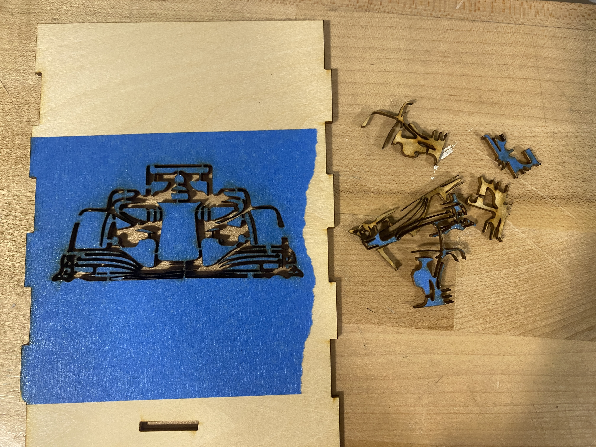

Ideation & Design
This week I'm creating an F1-theme lamp! The idea is to make an F1-theme lamp with the shape of a F1 circuit on one side of the lamp. F1 has 20~23 races every year around the world, so I plan to have a swappable lamp cover/window to put on the circuit F1 is currently racing on, as this will create an excitement for the race as well as allow me to be more familiar with the circuit layout. With a circuit-shape hole on the cover, the lamp will cast a circuit-shape shadow on the wall. I plan to laser cut & engrave the main lamp structure, and then 3D print the lamp window (as it is easier for me to 3D print the swappable parts at home).
Ideation sketches (open the image in a new tab for larger view)Materials
This is the lamp base I'm gonna use. Instead of a hanging lamp, I'm planning to make a desk lamp with swappable lamp covers.
The basswood sheets I use are 11.8 inch (300 mm) in length, 11.8 inch (300 mm) in width, 1/8 inch (2.6 mm is the actual measurement) in thickness.
Laser Cutting the Lamp Structure
I created the lamp structure in Rhino first, made them into a 3D model to make sure they all fit nicely, and then exported the structure outline to Adobe Illustrator. From there, I created the engraving details as well as a complex car shape to cut out of the basswood sheet.
The lamp structure outline and test fit in Rhino Add the engravings and car shape cut in Adobe Illustrator. Each canvas size is the same as the size of the basswood sheets.The car shape cutout required extra fixes as I needed to ensure that some parts wouldn't get cut out entirely. For any curves that were "dangling", meaning there was no connection between them and the other curves that were connected to the overall lamp structure, I needed to manually connect them by erasing part of the curve to avoid the cut.
The car shape from its original source image, to being turned into silhouettes, to the final laser cut shape!I conducted a test fit to see if the connection would hold, and modified the size for a bit to make the box fit tightly.
The laser cutter settings were set to 10/100/10 for speed/power/frequency, which worked great with basswood.
Originally, both the convex and the concave parts of the side-to-side joints were both set to 20mm, which turned out to be too loose. I increased the convex parts to 20.5mm and they fit perfectly! (such a small margin!)
 On the left was convex 20.5mm; on the right was convex 20mm which was too lose to form a box
On the left was convex 20.5mm; on the right was convex 20mm which was too lose to form a box
To create a clean cut of the car, I applied masking tape on the basswood sheet while cutting. Masking protects the surface from smoke residue left behind when the laser cuts. However the tape was a bit difficult to remove since I had really small and delicate parts (and I broke a part of the front wing while removing the tape...)
It was also my first time engraving. I happily learned that you can do it in one batch as long as you only set the stroke size of the curves that were meant to be cut to be 0.001 pt, and not the curves that were meant to be engraved.
Of course I'm gonna put an F1 calendar on the lamp to keep track of the races!Here are all of the parts that form the lamp structure.

The lamp innereds goes through the hole in the middle, and the cord goes out from the back of the lamp.
3D Printing the Swappable Lamp Window
I imported the track outline, modeled the swappable lamp window in Rhino, and then exported it to .stl file to convert to a gcode file in Cura for 3D printing.
Initially, I wanted a cutout of the circuit, so that the light will come out from the hole and project a circuit-shape shadow onto the wall. However, I made a big mis-calculation here as I tested the shadow with my iPhone flashlight and not the actual light bulb (it wasn't delivered yet). It turned out that the light bulb I got was a point light, but the iPhone flashlight was a spotlight! Important lesson-learned: You don't form a clear shadow with point light...
Given the time I had, I had to proceed with what I have. So I printed the lamp window with translucent filament to allow the light to come out, and it wasn't bad at all!
Final Lamp
Here is how the lamp turned out! As an F1 fan, I'm really happy with the result and will be printing more swappable circuit-shape lamp windows in the future!
Watching the race with the circuit shape on the lamp! Getting a light bulb with a remote control was the best decision! Very satisfying to see the car change the color with the party mode!
Getting a light bulb with a remote control was the best decision! Very satisfying to see the car change the color with the party mode!
Making a Mold for Mold
For part 2 of this week's assignment, I created a 3D-printed mold, and with that I made a silicone mold that is going to be used to cast a UW logo with plaster.
The process was fairly simple and were all done in Rhino. The below pictures demonstrated the process of converting a positive model into a mold with its negative space, and finally a mold-for-mold with the negative space of the mold. (what am I saying? lol)
After printing it, I realized that my registration points were too small and should be enlarged the next time I created a mold. I mixed the OOMOO 30 in a plastic bag (couldn't find three cups at that time) and then poured them into the mold.
Here's the mold for mold and the mold!

Attachment
The lamp files can be found here, and the casting files here
Acknowledgements
Thank you to Jun-Chao the TA for the help during office hour, and thanks for the classmates who shared all their work and tips over the discord channel!
Source of F1 font (similar to the official ones)